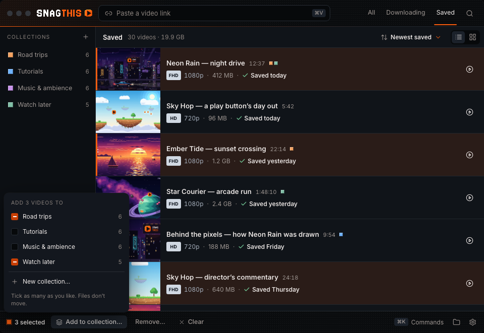
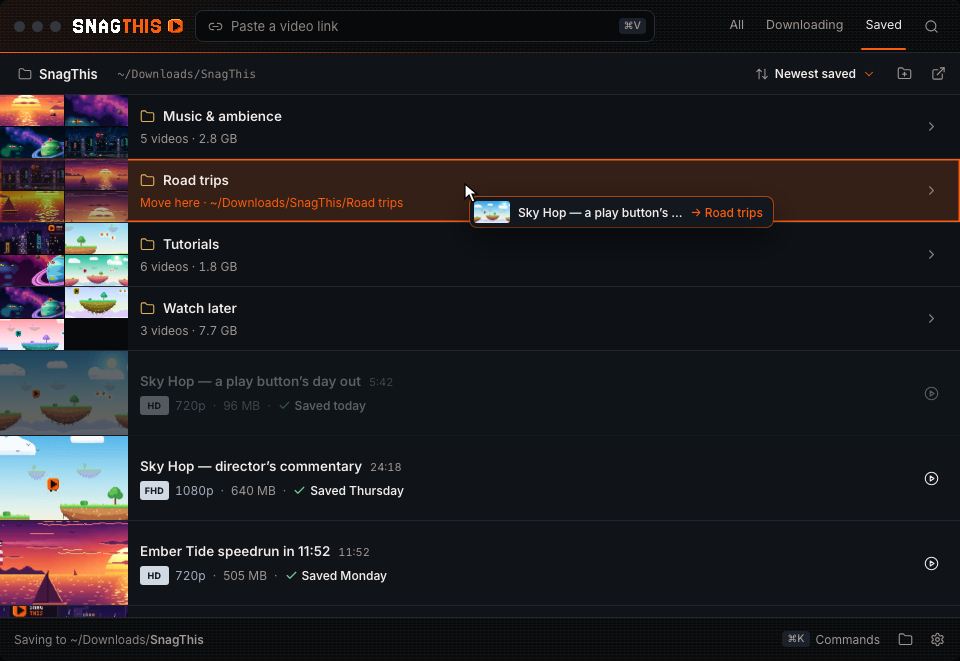
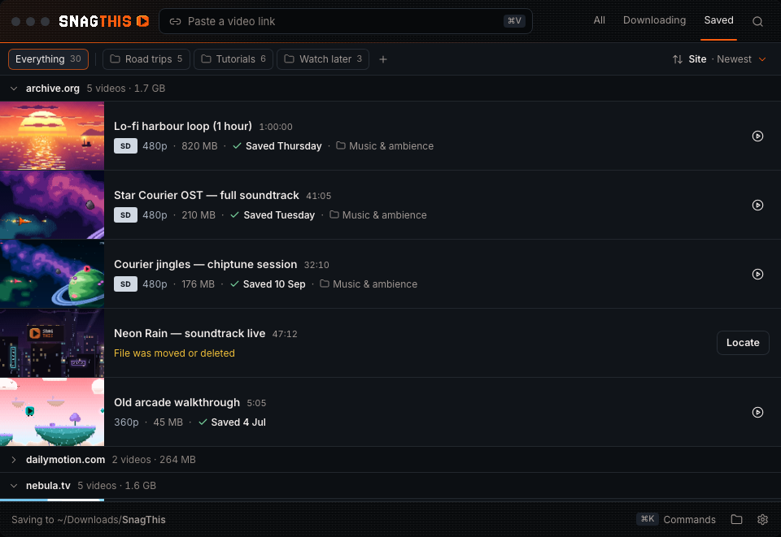
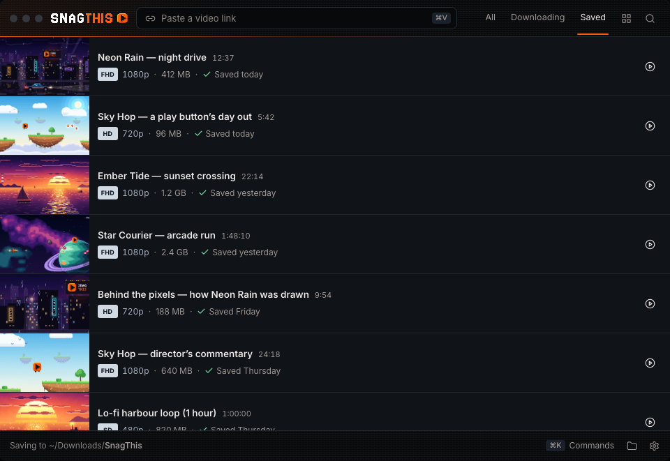

Sort the library, and put videos into folders
Owner request: “I'd like to add ability to sort the videos better, and group them in folder or move them and organize them.” Today Saved is always newest first, with no folders and no multi-select. Each direction below covers the six sort orders (newest, oldest, name, size, length, site) remembered per tab, creating, filling, renaming and deleting folders (drag a row onto a folder and a Move to… menu for one or many videos), and the empty and busy (30-video) states. Open one to click through its states (keys 1–9), try live drag and drop, and switch accents.
Collections
Open →A slim Collections sidebar and a list header with the sort. Collections are virtual and many-to-many: a video can be in Road trips and Watch later. Dragging adds; nothing moves on disk.

- Best for people who file one video several ways.
- Cost: the most new UI (sidebar, header, colour pips). Finder never sees collections.
States: sorted · sort menu · new · drag · add to… · collection · delete · empty


Real folders · chosen
Open →Saved is ~/Downloads/SnagThis: folder rows first (with a poster mosaic), then loose videos, under a path bar holding the sort. Moving a video moves its file; folders made in Finder show up.

- Best for people who also browse the files in Finder, Plex or backups.
- Cost: real file operations: failures, progress, a Trash choice on delete, one folder per video.
States: folders + sorted · sort menu · new · move to… · folder · delete · empty · move failed


Smart groups + pins · Sort & group chosen
Open →One Sort & group button (Site · Newest) and collapsible group headers by site, date, quality or folder. Folders are one-per-video labels; pinned ones are chips you drop rows on.

- Best for “help me find things” with no filing: grouping does most of the work.
- Cost: pins are shortcuts, not a tree. Virtual, so Finder never sees them.
States: grouped · sort & group menu · new · drag · move to… · folder · delete · empty


Side by side
| A · Collections | B · Real folders | C · Smart groups + pins | |
|---|---|---|---|
| Where folders live | SnagThis library index (virtual) | Subfolders of the save folder (on disk) | SnagThis library index (virtual) |
| Videos per folder | Many-to-many | One folder per file | One folder per video |
| Sort control | List header, right | Path bar, right | Strip under the header, names sort and group |
| Drag target | Sidebar collection (adds) | Folder row / “SnagThis” crumb (moves the file) | Pinned chip (moves the label) |
| Delete a folder | Safe: videos stay | Choice: keep videos (default) or move folder to Trash | Safe: videos stay |
| Changed in Finder | Moved file → “File was moved or deleted” → Locate keeps collections | Rescan picks up new, renamed and filled folders | As A |
| Failure handling | None needed | Per-row amber sentence + Try again; nothing half-moved | None needed |
| New UI | Most | Medium | Least |
Shared across all three
Same six orders; the sorted-by value brightens in each row (size, duration, date, or the site prepended). Each place remembers its own order. In All, sorting applies to saved videos while in-progress downloads stay on top (§6 ordering). Downloading keeps queue order, since waiting rows already drag to reorder. Multi-select is ⌘/Ctrl-click, Shift-click or Shift+↑/↓, and turns the footer into a selection bar; M opens Move/Add to…; Shift+F10 opens row menus; menus use ↑/↓, Home/End and Esc. Only saved rows drag to folders. Every file move or delete keeps the §9 rule: removing from a folder is never removing the file, and Trash uses shell.trashItem. Nothing is drawn over thumbnails.
Questions for the owner
- On disk or in the app? Should moving a video move its file (B), or only change how SnagThis shows it (A, C)? This decides almost everything else.
- One folder or many? Can a video be in two places (A), or just one (B, C)?
- Scope change: the spec lists folders/collections and multi-select as out of scope for v1 (§13). Is this for 1.0 or after?
- New downloads: should a folder be choosable before a download (paste field, popup, “Save new downloads here”), or only for sorting afterwards?
- Grouping: worth having on its own (C's site/date/quality) even if you pick A or B?
- Chrome: the extension has no Saved library. Should folders ever appear in the popup?
- For B: what about nested folders and folders created in Finder outside SnagThis's own per-download folders?
0 · Current baseline

- Saved is always newest first (
mergeRows,historyIndex.js). No sort, folders or multi-select. - Saved has a list ⇄ shelf toggle beside search; search is server-side across the whole library.
- Each saved item knows its title, file name and path, size, file time, quality (selection height), duration (when known), source page URL (→ site) and thumbnail.
- Files live in ~/Downloads/SnagThis/{title}/, one folder per download. The index rescans that folder recursively.
- Saved row ⋯ today: Details, Copy link, Open page, Show in folder, Remove… (Remove from list / Move file to Trash).